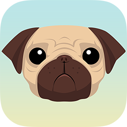

iGG's Repo 
iGameGuardian
is a memory editor for jailbroken devices
Add to Cydia
Add to Sileo
Add to Zebra
Featured Packages
iGG 12 Speed
iGameGuardian is a memory editor for iOS 11 to 13.
Show more Details
iGG 12 Stable
iGameGuardian is a memory editor for iOS 8 to 10.
Show more Details
iGameGuardian
iGameGuardian is a memory editor for iOS 8 to 11.
Show more Details